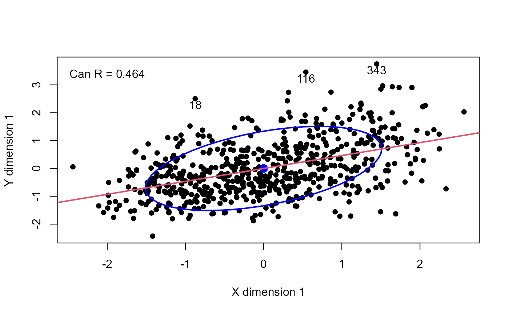
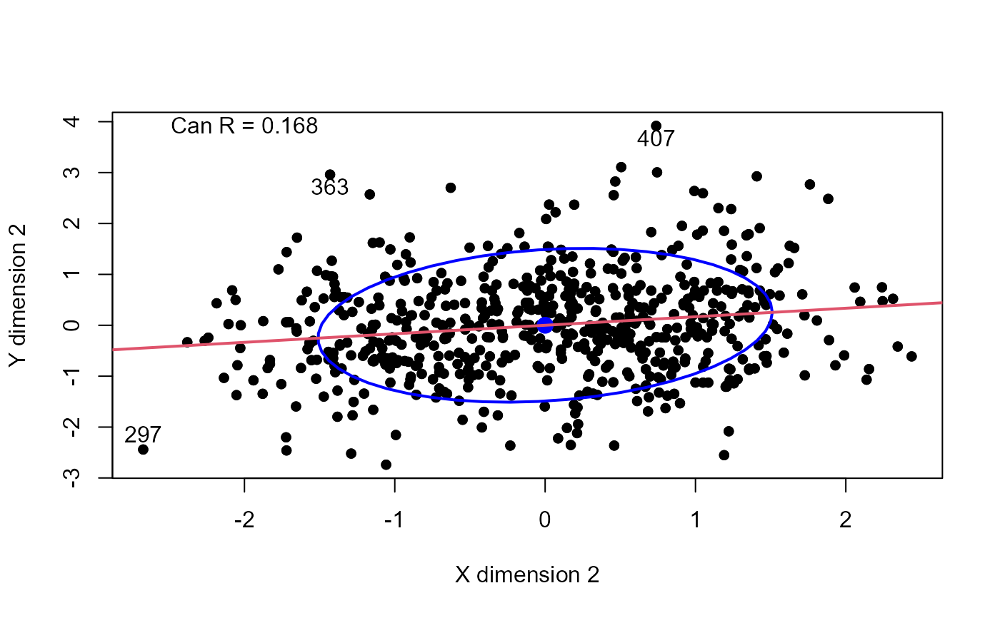

A researcher collected data on three psychological variables, four academic variables (standardized test scores) and gender for 600 college freshman. She is interested in how the set of psychological variables relates to the academic variables and gender. In particular, the researcher is interested in how many dimensions (canonical variables) are necessary to understand the association between the two sets of variables.
Usage
data("PsyAcad")Format
A data frame with 600 observations on the following 8 variables.
LocControllocus of control, a numeric vector
SelfConceptself concept, a numeric vector
Motivationmotivation, a numeric vector
Readreading score, a numeric vector
Writewriting score, a numeric vector
Mathmathematics score, a numeric vector
Sciencescience score, a numeric vector
Sexa factor with levels
M,F
Source
Taken from https://stats.oarc.ucla.edu/r/dae/canonical-correlation-analysis/
Examples
data(PsyAcad)
PsyAcad$Sex <- as.numeric(PsyAcad$Sex)
PsyAcad.can <- cancor(cbind(LocControl, SelfConcept, Motivation) ~
Read + Write + Math + Science + Sex, data = PsyAcad)
#> Warning: non-list contrasts argument ignored
PsyAcad.can
#>
#> Canonical correlation analysis of:
#> 5 X variables: Read, Write, Math, Science, Sex
#> with 3 Y variables: LocControl, SelfConcept, Motivation
#>
#> CanR CanRSQ Eigen percent cum scree
#> 1 0.4641 0.21538 0.27450 87.336 87.34 ******************************
#> 2 0.1675 0.02806 0.02887 9.185 96.52 ***
#> 3 0.1040 0.01081 0.01093 3.478 100.00 *
#>
#> Test of H0: The canonical correlations in the
#> current row and all that follow are zero
#>
#> CanR LR test stat approx F numDF denDF Pr(> F)
#> 1 0.46409 0.75436 11.7157 15 1634.7 < 2.2e-16 ***
#> 2 0.16751 0.96143 2.9445 8 1186.0 0.002905 **
#> 3 0.10399 0.98919 2.1646 3 594.0 0.091092 .
#> ---
#> Signif. codes: 0 '***' 0.001 '**' 0.01 '*' 0.05 '.' 0.1 ' ' 1
# redundancy analysis
redundancy(PsyAcad.can)
#>
#> Redundancies for the X variables & total X canonical redundancy
#>
#> Xcan1 Xcan2 Xcan3 total X|Y
#> 0.1130458 0.0070132 0.0009804 0.1210394
#>
#> Redundancies for the Y variables & total Y canonical redundancy
#>
#> Ycan1 Ycan2 Ycan3 total Y|X
#> 0.081799 0.007270 0.003905 0.092974
# Plots
canR <- PsyAcad.can$cancor
plot(PsyAcad.can, pch=16, id.n = 3)
text(-2, 3, paste("Can R =", round(canR[1], 3)), pos = 3)

plot(PsyAcad.can, which = 2, pch=16, id.n = 3)
text(-2, 3.5, paste("Can R =", round(canR[2], 3)), pos = 3)
